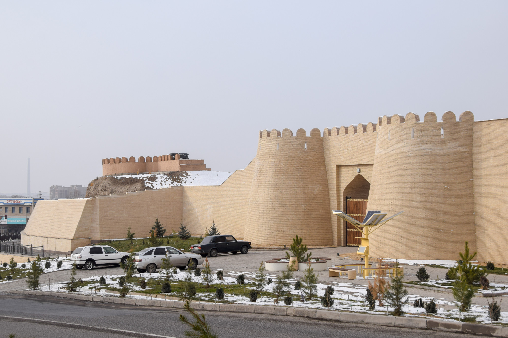
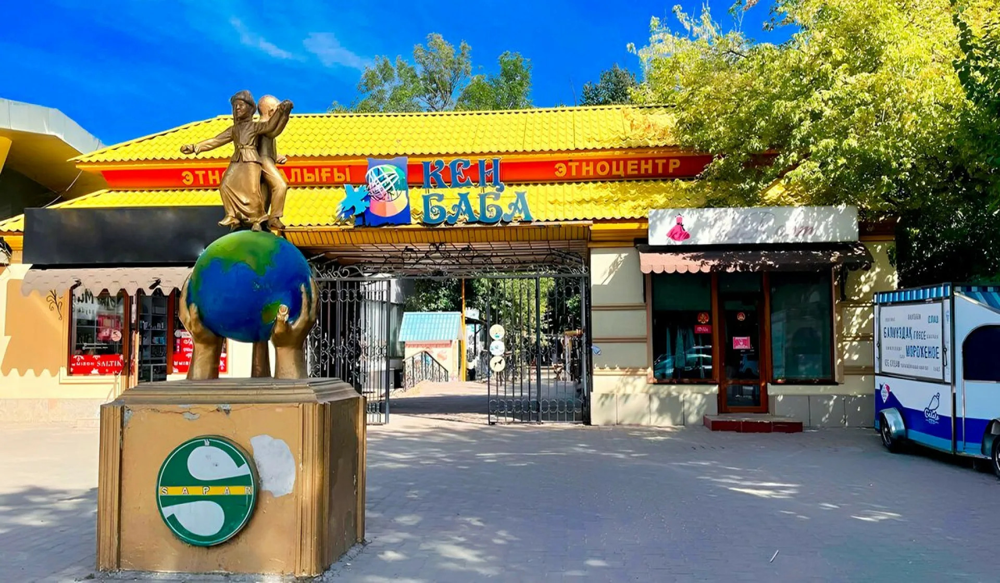
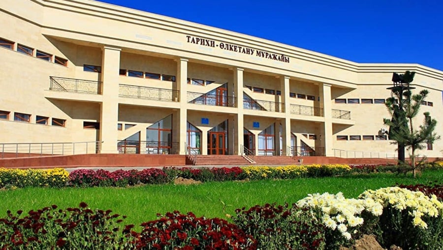
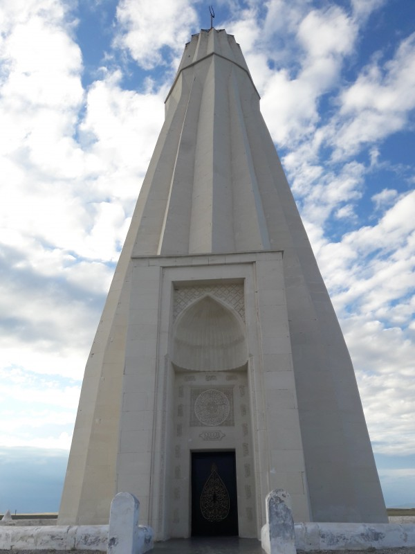
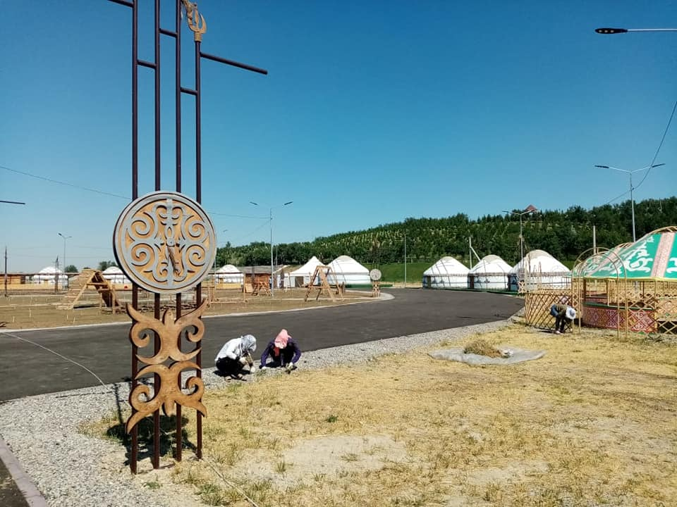

Шымкент
Шымкент — один из старейших и крупнейших городов Казахстана, расположенный на юге страны. Это промышленный, культурный и торговый центр региона, входящий в тройку крупнейших мегаполисов Казахстана. Город известен богатым историческим наследием, многонациональной культурой и развитой инфраструктурой.
Население: около 1,2 миллиона человек
Основан: приблизительно в XII–XIII веках (как торгово-ремесленный центр на Великом шелковом пути)
История
История Шымкента насчитывает многие столетия. Город возник как укреплённое поселение и торговый центр, обслуживающий караванные пути Великого шелкового пути. Его стратегическое расположение способствовало росту ремесел, торговли и земледелия. В разные периоды регион находился под влиянием тюркских государств, Чагатайского улуса и Казахского ханства. В XIX веке Шымкент вошел в состав Российской империи и превратился в важный опорный пункт Туркестанского края. В советское время город стал значимым промышленным центром, особенно в химической и текстильной отрасли. В 2018 году Шымкент получил статус города республиканского значения, что способствовало ускоренному развитию инфраструктуры и экономики.

Достопримечательности
-

Цитадель Шымкента — исторический комплекс, восстановленный как археологический и культурный центр.
-

Парк «Кен Баба» — один из самых известных парков города с современными зонами отдыха.
-

Региональный историко-краеведческий музей — крупнейшая коллекция материалов по истории Южного Казахстана.
-

Мавзолей Абая — важный культурно-исторический объект, расположенный недалеко от центра.
-

Этноауыл «Шымкент» — культурный комплекс, демонстрирующий традиции казахского народа.
-

Парк Индепенденс (Парк Независимости) — современная зона с аллеями, монументами и фонтанами.
Культура
Культурная жизнь Шымкента отличается яркостью, разнообразием и сильными этническими традициями. В городе активно работают театры, филармония, музеи и культурные центры. Шымкент славится развитой гастрономической культурой и гостеприимством жителей. Ежегодно проводятся фестивали музыки, танца, ремесел и национальных искусств.
Интересные факты
- Шымкент — один из старейших городов региона, известный как часть Великого шелкового пути.
- Город считается неофициальной «гастрономической столицей» из-за богатой кухни и развитой уличной еды.
- Шымкент — третий мегаполис Казахстана с быстро растущей инфраструктурой.